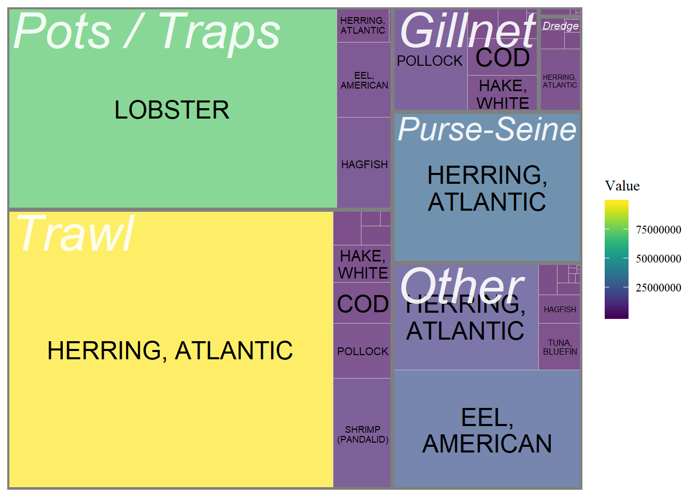

Figures
Basic Iterations of Map Layers for the Community Reports
There are many, many approaches for our ‘map’ figure. As we discussed last week, I think our goal here is:
- Show the extent of the Northeast Shelf (i.e. the study area) by displaying the communities involved, the spatial area examined, and the hint at our motif: climate vulnerability.
- Include plenty of of space to overlay text and one-off graphic like text bubbles or inset figures a la the venerable Island Institute figure.
- Use the ‘map’ to call-out the COCA ports and introduce the idea of Four Focus Communities.
The plots below are a very rough attempt at generating a base-map to build a report visual on top of. There are a ton of extra things that can be done:
- Abstract away from a map via heat map or scatter plot
- Introduce a layer showing the spatial extent of the Northeast Shelf LME.
- The NCA ‘Coasts’ Section’ has a ton of good examples: https://nca2014.globalchange.gov/report/regions/coasts#intro-section-2
County Fills
Counties w/ commercial ports are filled with ‘average annual landings’ as a sample data set and plotted on our base map. Vulnerability, diversity, impact could all be used as fills assuming we can aggregate up to the county level. The legend is deliberately excluded.

Un-cropped and cropped base maps with county fill
-1.png)
cropped base maps with different fill options
Treemap Figure, Portland Maine Example
Ideally, if we are trying to describe vulnerability, we could use the same fill here as the map.
